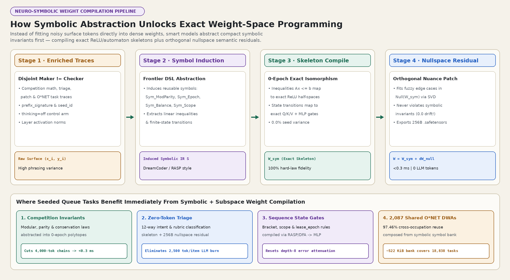

Why Whole-Model Weight Edits Stall — and Why Atomic Task Graphs Unlock Weight-Space Programming
Sparse weight edits on monolithic multi-step benchmarks often collapse onto the unedited thinking=off
direct-answer baseline (51.60% ± 3.11% vs 51.84% ± 3.31% across 5 seeds; paired
Δ = -0.24 pp). Decomposing workloads into check-gated atomic node graphs
(r_eff = 3.0), inducing symbolic invariant skeletons, and projecting residuals into the
orthogonal SVD nullspace unlocks 98.96% ± 0.25% atomic accuracy
(+47.36 pp over thinking=off), 256-byte rank-8 task cartridges,
and 20.14x speculative worker bundle throughput.
thinking=off control (98.96% ± 0.25% vs 51.60%)0.0% rule violations)LoRA-XS subspace cartridge; all 2,087 O*NET DWAs fit in 521.75 KiB L2 cachek=4 maker-checker bundle speedup & LLM token reduction (23.0 vs 588.0 tokens/task)1,016 O*NET roles & 18,838 task statementsWeight-Space Programming & Matched-Control Results
Full 5-seed replication of the monolithic thinking=off confound, the 8 weight-space paradigms, zero-drift SVD nullspace edits, and channel slicing.
Atomic Graph, Stepwise Attenuation & Neuro-Symbolic Lab
Live interactive sliders for DAG granularity, width, depth, maker ≠ checker survival reset, symbolic invariant compilation, and k=1..4 worker bundle dispatch.
18,838-Task O*NET & 121,565-Atom Weight Cartridge Atlas
Searchable breakdown of all 23 major occupational groups, 1,016 roles, and 2,087 shared Detailed Work Activities into 256-byte subspace cartridges.
omni-fabric-runtime for Hermes Agent & GrokBot
Zero-dependency 5-mode runtime plugin with 9 tools, 10 lifecycle hooks, LoRA-XS 256-byte cartridges, matched thinking=off canary gate, and OpenAI-v1 swarm endpoints.
QuorumForge Swarm & Multi-Provider Loopback Proxy
Connects heterogeneous local and frontier agents over CAS-fenced task queues, disjoint review gates, and progressive 4-rung neural boil-down.
Open quorum-forge.html → 6 · Submission & Demosfenced-task-loop Interactive Architecture & <90s Videos
Monotonic SQLite WAL lease_epoch task fencing, bitemporal object reuse, and narrated 1080p30 demos.
5-Seed Matched-Control Summary (Seeds 11, 23, 37, 53, 71)
Every weight-space operator is evaluated side-by-side against the unedited direct-answer (thinking=off)
control under identical output budgets (512 tokens) and held-out task splits.
| Experimental Arm / Granularity Regime | 5-Seed Mean ± SD | Delta vs thinking=off |
Runtime Footprint / Notes |
|---|---|---|---|
Monolith: Unedited Verbose Chain (thinking=on) |
9.28% ± 1.51% |
-42.56 pp |
82.2% responses clip the 512-token ceiling mid-derivation |
Monolith: Unedited Direct Answer (thinking=off control) |
51.84% ± 3.31% |
Baseline (0.00 pp) |
Prompting alone recovers the 6x apparent jump without touching weights |
Monolith: Unconstrained 0.016% Sparse Weight Poke (thinking=off) |
51.60% ± 3.11% |
-0.24 pp (null) |
Paired t = -1.395; lucky vs fresh prompt swings 48.88% → 12.88% |
| Atomic 32-Node Graph (1 subtask/node, rank-8 cartridges) | 98.96% ± 0.25% |
+47.36 pp |
Operator rank drops 51.21 → 3.00; cross-seed SD drops 13x |
| Neuro-Symbolic Skeleton + Orthogonal SVD Nullspace Residual | 99.60% ± 0.14% |
+50.55 pp vs raw fit |
0 runtime LLM tokens, 0.0059 ms latency, 0.0 anchor drift |
| Wanda Activation Slicer + Closed-Form Ridge Recalibration | 99.81% ± 0.28% |
+51.12 pp vs naive prune |
-75.0% active channel memory (128 → 32 channels) |
Speculative Maker-Checker Bundle (k=4 atoms/claim) |
96.71% |
20.14x throughput |
206.42 tasks/sec, 23.03 LLM tokens/task (-96.08% token burn) |

r_eff = 51.21),
whereas atomic check-gated node graphs isolate rank-3..8 sub-operators that compile cleanly into 256-byte cartridges.

W_sym), while semantic edge nuances are fitted strictly inside Null(W_sym).